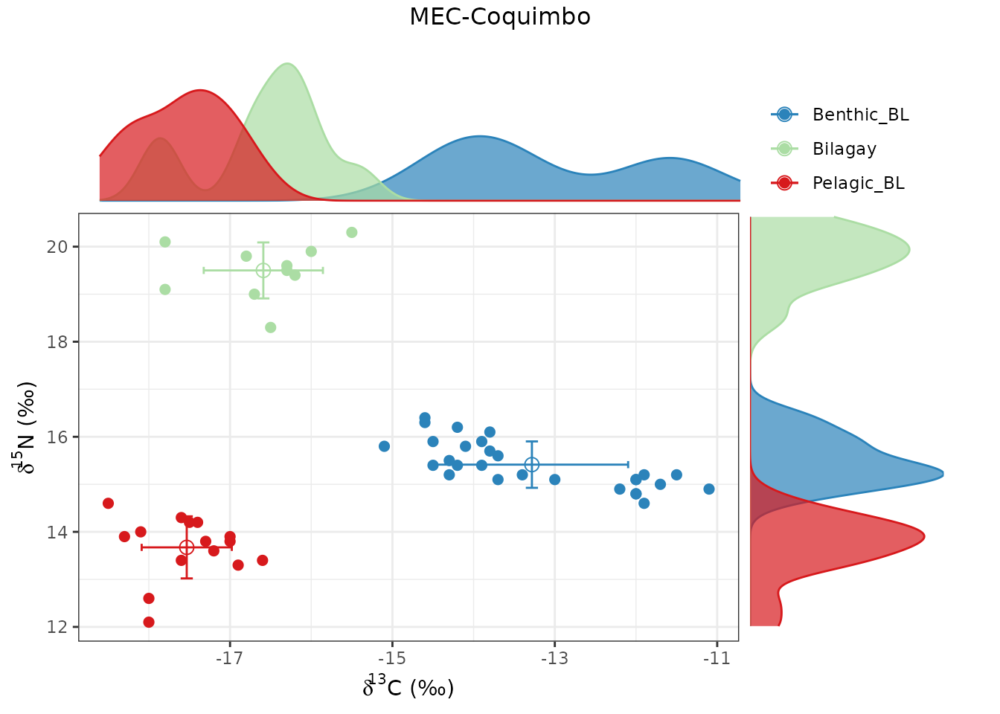
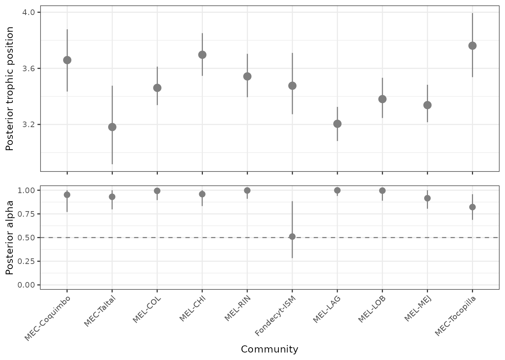

tRophicPosition: calculating trophic position for multiple species
Claudio Quezada-Romegialli, Andrew L Jackson & Chris Harrod
December 11 2022
Source:vignettes/Multiple_species_calculation_of_trophic_position_in_R_1.Rmd
Multiple_species_calculation_of_trophic_position_in_R_1.RmdtRophicPosition
tRophicPosition, is an R package incorporating a
Bayesian model for the calculation of trophic position using stable
isotopes with one or two baselines. As of 2022-12-11, the current
version of the package is 0.8. tRophicPosition uses the
powerful approach of Markov Chain Monte Carlo simulations provided by JAGS and the statistical
language R. Vignettes can be
browsed with browseVignettes("tRophicPosition").
Introduction
In this vignette, we will introduce the new functions we have
developed for tRophicPosition in the version 0.6.8-9. These
functions are extractIsotopeData(),
jagsBayesianModel() and multiSpeciesTP().
Aditionally, we provide an example to run these calculations in parallel
(maximizing efficient use of computing power). Each of these functions
accomplish different tasks within the Bayesian estimation of trophic
position with stable isotopes, extracting stable isotope data for
multiple species and/or communities, and facilitating the calculation of
trophic position for multiple consumers within one or more ecosystems.
We have also included a parallel calculation of trophic position, to
make full use of the multiple processor cores typical in modern
computers.
Installing and loading the package
Stable version - CRAN
First of all, you need to install JAGS for your platform, and
then install the stable version of tRophicPosition from CRAN:
install.packages("tRophicPosition")After that, you have to load the package with:
Development version - GitHub
If you want to install the development version of
tRophicPosition, you must install it from GitHub. For this,
we use the function install_github() from the package
devtools (installation instructions here),
which needs to be installed previously (either from CRAN or GitHub):
install.packages("devtools")
library(devtools)If you are working in Windows, devtools also requires Rtools, or if
you are working on a Mac, Xcode (from Apple Store).
In Linux you will need to install a compiler and various development
libraries.
Besides installing devtools, you must also install JAGS (Just Another Gibbs
Sampler), which is at the core of the Bayesian model analysis supporting
tRophicPosition.
install_github("clquezada/tRophicPosition", build_vignettes = TRUE)After installing tRophicPosition, it should be loaded
into memory, which automatically reports the version of the software (we
need at least 0.6.8-8 to use the routines described in this
vignette).
## This is tRophicPosition 0.8.0Future releases and how to get support
You are encouraged to use tRophicPosition with your own
data, test the package and see if there are any issues or problems. You
can send your questions or commentaries to the google group tRophicPosition-support
or directly to the email trophicposition-support@googlegroups.com. You can send
your questions to https://stackexchange.com/ https://stackoverflow.com/ or even Facebook (stable
isotope ecology group).
We are constantly working on future releases of
tRophicPosition, so feedback is very much appreciated.
Multiple species calculation of trophic position (TP)
Before we start
If you have been using R prior to starting your analysis of
tRophicPosition, it is possible that the environment
contains unwanted data. Try to be as organized as possible with the data
generated within R/RStudio, as this will make things a lot clearer.
When working on your analysis, a good first thing to do is to set the
working directory to a convenient location. This is accomplished using
setwd(). In RStudio you can use the menu “Session/Set
Working Directory” to make things easier.
The next thing is to clear the environment. With RStudio you can
click on the little broom icon in the environment tab, or use the
command rm(list = ls()). Also, it is a good idea to clear
the plots using the same broom icon in the plots tab, or the command
graphics.off(). This is only needed if you have been
working with some data before.
And now, an initial analysis - Bilagay TP from multiple coastal kelp forests in N Chile
We will start with some data from a fish common to the coastal kelp forests of N Chile, the bilagay Cheilodactylus variegatus (http://www.fishbase.se/summary/Cheilodactylus-variegatus.html). We have data from a number of populations (and associated filter feeding and grazing molluscs representing pelagic and benthic baselines respectively) from a series of different locations along the N Chilean coast. We know from the literature that bilagay diet is extremely variable and reflects what is locally available. We also know that there is a marked N-enrichment at the base of the food chain reflecting increased upwelling intensity as you move northwards up the coast. As such, we need to account for variation in baseline N variation before calculating TP at each site.
So, our question is, given the potential influences of local differences in diet stomach contents and upwelling intensity, are there measurable differences in bilagay TP between the different locations along the S-N latitudinal gradient?
We will use a data set included within tRophicPosition.
The structure of the file has 7 columns, where species
(Spp) are grouped into functional groups (FG)
to describe its role in each of the ecosystems: “Bilagay” (our fish of
interest), “Benthic_BL” (benthic baseline) and “Pelagic_BL” (pelagic
baseline). We have samples from locations along the N Chilean coast
(NS stands for the N-S ordering) and from multiple studies
(Study) and locations (Location). We also have
stable isotope values in two columns: “d13C” and “d15N”.
| Study | Location | Spp | FG | d13C | d15N | NS | |
|---|---|---|---|---|---|---|---|
| 1 | MEL | CHI | Echinolittorina peruviana | Benthic_BL | -10.1 | 16.3 | 4 |
| 2 | MEL | CHI | Echinolittorina peruviana | Benthic_BL | -11.7 | 16.3 | 4 |
| 3 | MEL | CHI | Echinolittorina peruviana | Benthic_BL | -9.8 | 16.4 | 4 |
| 130 | MEL | COL | Bilagay | Bilagay | -15.2 | 20.9 | 3 |
| 131 | MEL | COL | Bilagay | Bilagay | -15.4 | 21.3 | 3 |
| 132 | MEL | COL | Bilagay | Bilagay | -15.2 | 21.6 | 3 |
| 133 | MEL | COL | Bilagay | Bilagay | -15.0 | 22.0 | 3 |
| 660 | MEL | MEJ | Perumytilus purpuratus | Pelagic_BL | -15.9 | 18.1 | 9 |
| 661 | MEL | MEJ | Perumytilus purpuratus | Pelagic_BL | -15.6 | 17.4 | 9 |
If you want to edit the raw data or modify it, open the following
file with your favourite application, save it to your working directory
and then load it with read.csv() or
read.table().
system.file("extdata", "Bilagay_for_tRophicPosition.csv", package = "tRophicPosition")## [1] "/home/runner/work/_temp/Library/tRophicPosition/extdata/Bilagay_for_tRophicPosition.csv"To load the Bilagay data set into R, use
data():
data("Bilagay")As shown above, in this data set we have a combination of Study and
Location variables, which need to be concatenated. Here we introduce
mutate and arrange functions from the package
dplyr and the pipe operator %>% (from magrittr but
loaded through dplyr).
# install.packages(dplyr) if you haven't installed it before
library(dplyr)
Bilagay <- Bilagay %>% mutate(Community = paste(Study,"-", Location, sep = ""))Also, this spreadsheet has information from the latitudinal
arrangement of sampling sites, which is the variable NS
(North to South order), ranging from 1 (most southern site) to 10 (most
northern site). Below we order the whole data frame considering those
values.
Now, we are ready to proceed with the calculation of trophic position. This follows the same general process you have already encountered in the previous vignette (A guide to the use of tRophicPosition. First we must consecutively subset the data frame considering each of the communities we have samples of. We could use the subset command, repeating the same command each time for each community.
If we only have 2 sampling sites, this can be done by hand. However, here we have different 10 sampling sites, so this task can be prone to errors and time-consuming, as we have to repeat the same code 10 times, but with changes in the Location, selecting the baseline, etc.
To deal with this issue, we have developed a convenient function
extractIsotopeData() where you can indicate the text for
each of the baselines and the respective column where they are coded,
the consumers column, and the group column. This function iterates
through the data frame selecting unique values from the group column,
extracting all the values that belong to each group and then iterate
within them. Then it will extract all stable isotope values from the
columns “d13C” and “d15N” (if their values haven’t changed) for each
baseline. Finally, it will select each unique value from the consumers
column and it will generate an isotopeData class object for
each consumer combining their baselines isotope values. See
help(extractIsotopeData) for other options.
BilagayList <- extractIsotopeData(Bilagay, b1 = "Pelagic_BL", b2 = "Benthic_BL",
baselineColumn = "FG", consumersColumn = "Spp",
groupsColumn = "Community",
d13C = "d13C", d15N = "d15N")If no
N
and/or
C
values are included as arguments, by default this function will use
assumptions from Post (2002), i.e. 3.4
0.98 sd for nitrogen and 0.39
1.3 sd for carbon). You can change either TDF values using the function
TDF() or a list of values, as explained in the short guide
to the use of tRophicPosition vignette.
The next step is use the str function to check that all
went well during the use of the extractIsotopeData()
function:
str(BilagayList)## List of 1
## $ MEC-Coquimbo-Bilagay:List of 8
## ..$ dNb1 : num [1:15] 13.8 14.3 14.2 13.4 13.8 13.3 14.6 14 14.2 13.9 ...
## ..$ dCb1 : num [1:15] -17.3 -17.6 -17.4 -16.6 -17 -16.9 -18.5 -18.1 -17.5 -18.3 ...
## ..$ dNb2 : num [1:28] 14.9 15.2 15 15.2 16.3 15.7 15.4 15.5 16.4 15.4 ...
## ..$ dCb2 : num [1:28] -11.1 -11.9 -11.7 -11.5 -14.6 -13.8 -14.5 -14.3 -14.6 -13.9 ...
## ..$ deltaN: num [1:56] 2.48 3.21 3.81 2.28 3.74 ...
## ..$ deltaC: num [1:107] -1.158 -0.129 0.719 -1.45 0.622 ...
## ..$ dNc : num [1:10] 19.4 19 19.1 18.3 19.8 20.1 19.6 20.3 19.5 19.9
## ..$ dCc : num [1:10] -16.2 -16.7 -17.8 -16.5 -16.8 -17.8 -16.3 -15.5 -16.3 -16
## ..- attr(*, "class")= chr "isotopeData"
## ..- attr(*, "consumer")= chr "Bilagay"
## ..- attr(*, "baseline1")= chr "Pelagic_BL"
## ..- attr(*, "baseline2")= chr "Benthic_BL"
## ..- attr(*, "group")= chr "MEC-Coquimbo"If you execute the code above you will see a lot of information, but
for this vignette, we have shortened the output to make it readable. In
your console, you will note that there is a list of 10 elements,
followed by the sign $ and the concatenated name of each of our
communities with the name of our species (Bilagay). Each of these
objects (MEC-Coquimbo-Bilagay, MEC-Taltal-Bilagay, etc.) is a list of 8
elements that relate to a particular sampling location, in a structure
that is ready to use with tRophicPosition: they are objects
of the class isotopeData.
The class isotopeData is a special object recognized
within the package. It also has other information embedded within it:
consumer, baseline 1, baseline 2, and community labels, besides a list
of isotope values with the convention introduced before (dNb1 is d15N of
baseline 1, dCb1 is d13C of baseline 1, dNb2 and dCb2 respectively for
the baseline 2, dNc and dCc respectively for the consumer, and deltaN
and deltaC are trophic discrimination factors).
Now, as we have extracted each community from the original data
frame, we can iterate through them, prepare a summary and plot them.
Here we introduce the for command, which is one of the
basic control-flow elements of programming. Again, if you execute the
following code you will have a summary and a plot for each community,
but in this vignette, you will see only one example.
##
## Summary for stable isotope data object
##
## Group MEC-Coquimbo
## Consumer Bilagay
## Baseline 1 Pelagic_BL
## Baseline 2 Benthic_BL
##
## n mean sd se min max median
## dNb1 15 13.7 0.7 0.2 12.1 14.6 13.8
## dCb1 15 -17.5 0.6 0.1 -18.5 -16.6 -17.5
## dNb2 28 15.4 0.5 0.1 14.6 16.4 15.3
## dCb2 28 -13.3 1.2 0.2 -15.1 -11.1 -13.8
## deltaN 56 3.4 1 0.1 1.1 5.4 3.3
## deltaC 107 0.4 1.3 0.1 -3.2 3 0.6
## dNc 10 19.5 0.6 0.2 18.3 20.3 19.6
## dCc 10 -16.6 0.7 0.2 -17.8 -15.5 -16.4
Now we have to model each community within the Bayesian framework of
tRophicPosition (as introduced previously in other
vignettes, e.g. a
guide to the use of tRophicPosition.
For this, we have developed a function that automatically i) defines
a Bayesian model, ii) initializes the model and iii) samples the
posterior distribution of trophic position. This is accomplished using
the function multiSpeciesTP(), similar to the function
multiModelsTP() explained in the vignette multiple models
calculation with tRophicPosition.
Bilagay_models <- multiSpeciesTP(BilagayList, model = "twoBaselinesFull",
n.adapt = 10000, n.iter = 10000,
burnin = 10000, n.chains = 5, print = FALSE)## Compiling model graph
## Resolving undeclared variables
## Allocating nodes
## Graph information:
## Observed stochastic nodes: 269
## Unobserved stochastic nodes: 36
## Total graph size: 330
##
## Initializing modelBy default, the function multiSpeciesTP() uses
lambda = 2 (trophic level of baselines),
n.chains = 2 (number of parallel MCMC simulations), and set
n.adapt, n.iter and burnin as 10000 iterations. The model calculated by
default is oneBaseline, so in this case we have changed it
to model = "twoBaselinesFull" as we have two separate
potential sources of N and C. In this particularly case, there was no
need to explicitly state the number of adaptive iterations, iterations
and burnin, but we decided to make them clear. Also, here we calculate 5
chains instead of the default (i.e. n.chains = 2).
The function multiSpeciesTP() returns 4 objects: 1. a
list named multiSpeciesTP, which includes the raw data
returned by posteriorTP() for each consumer/species per
group/community/sampling location; 2. a data frame named df
with the mode, median and credibility confidence interval for trophic
position and alpha (if a two baselines model was chosen), grouped by
model, consumer/species and group/community/sampling location; 3. a list
named TPs with the posterior samples of trophic position
for each group/community/location and consumer/species; and 4. a list
named Alphas which includes the posterior samples of alpha
(relative contribution of baseline 1) for each species by
group/community/location.
More advanced users will likely directly access this object for subsequent analysis. For now, we will concentrate on plotting the mode or median and 95% credibility interval for Bilagay from each location, using the joint values of trophic position and alpha by community/location, allowing an easy visual comparison between them:
# By default the mode is used in both trophic position and alpha plots
credibilityIntervals(Bilagay_models$df, x = "group", xlab ="Community")
# If you want to use the median instead of the mode,
# just add y1 and y2 as arguments
credibilityIntervals(Bilagay_models$df, x = "group", xlab ="Community",
y1 = "median", y2 = "alpha.median")
To get a numerical summary of posterior estimates (median and 95% credibility interval) of trophic position, we can write the following:
# To get a numerical summary
sapply(Bilagay_models$"TPs", quantile, probs = c(0.025, 0.5, 0.975)) %>% round(3)
# To get the mode
getPosteriorMode(Bilagay_models$"TPs")## MEC.Coquimbo.Bilagay.2bf MEC.Taltal.Bilagay.2bf MEL.COL.Bilagay.2bf
## 2.5% 3.449 2.920 3.337
## 50% 3.660 3.192 3.463
## 97.5% 3.893 3.483 3.612
## MEL.CHI.Bilagay.2bf MEL.RIN.Bilagay.2bf Fondecyt.ISM.Bilagay.2bf
## 2.5% 3.557 3.400 3.278
## 50% 3.703 3.545 3.482
## 97.5% 3.865 3.711 3.717
## MEL.LAG.Bilagay.2bf MEL.LOB.Bilagay.2bf MEL.MEJ.Bilagay.2bf
## 2.5% 3.089 3.246 3.218
## 50% 3.206 3.384 3.342
## 97.5% 3.333 3.533 3.487
## MEC.Tocopilla.Bilagay.2bf
## 2.5% 3.547
## 50% 3.762
## 97.5% 4.006## MEC.Coquimbo.Bilagay.2bf MEC.Taltal.Bilagay.2bf
## Posterior mode 3.659 3.182
## MEL.COL.Bilagay.2bf MEL.CHI.Bilagay.2bf MEL.RIN.Bilagay.2bf
## Posterior mode 3.461 3.697 3.542
## Fondecyt.ISM.Bilagay.2bf MEL.LAG.Bilagay.2bf MEL.LOB.Bilagay.2bf
## Posterior mode 3.476 3.205 3.381
## MEL.MEJ.Bilagay.2bf MEC.Tocopilla.Bilagay.2bf
## Posterior mode 3.338 3.762Finally, we can statistically compare whether either the posterior
samples of trophic position and/or alpha alpha differ between
communities/locations. In this example we compare both posterior
estimates accross communities/locations with the function
pairwiseComparisons(). Remember that this output must to be
read as: what is the probability that consumer in row Y has a posterior
trophic position/alpha less than or equal to consumer in column X. To
make readable the output, we will compare only the first 8
communities/locations. If you want to compare all the
communities/locations, just remove [1:8] below:
# First, we compare bilagay posterior trophic position estimates
pairwiseTP <- pairwiseComparisons(Bilagay_models$TPs[1:8], print = TRUE)
# And then, we compare their posterior alpha estimates
pairwiseAlpha <- pairwiseComparisons(Bilagay_models$Alphas[1:8], print = TRUE)## [1] [2] [3] [4] [5] [6] [7] [8]
## [1] MEC.Coquimbo.Bilagay.2bf 0.000 0.005 0.071 0.628 0.206 0.138 0.000 0.022
## [2] MEC.Taltal.Bilagay.2bf 0.995 0.000 0.958 0.998 0.981 0.949 0.541 0.880
## [3] MEL.COL.Bilagay.2bf 0.929 0.042 0.000 0.987 0.777 0.550 0.002 0.219
## [4] MEL.CHI.Bilagay.2bf 0.372 0.002 0.013 0.000 0.081 0.056 0.000 0.001
## [5] MEL.RIN.Bilagay.2bf 0.794 0.019 0.223 0.919 0.000 0.326 0.001 0.071
## [6] Fondecyt.ISM.Bilagay.2bf 0.862 0.051 0.450 0.944 0.674 0.000 0.014 0.236
## [7] MEL.LAG.Bilagay.2bf 1.000 0.459 0.998 1.000 0.999 0.986 0.000 0.970
## [8] MEL.LOB.Bilagay.2bf 0.978 0.120 0.781 0.999 0.929 0.764 0.030 0.000## [1] [2] [3] [4] [5] [6] [7] [8]
## [1] MEC.Coquimbo.Bilagay.2bf 0.000 0.528 0.809 0.622 0.838 0.026 0.899 0.813
## [2] MEC.Taltal.Bilagay.2bf 0.472 0.000 0.805 0.614 0.835 0.019 0.897 0.805
## [3] MEL.COL.Bilagay.2bf 0.191 0.195 0.000 0.272 0.544 0.006 0.682 0.535
## [4] MEL.CHI.Bilagay.2bf 0.378 0.386 0.728 0.000 0.770 0.012 0.861 0.753
## [5] MEL.RIN.Bilagay.2bf 0.162 0.165 0.456 0.230 0.000 0.004 0.639 0.493
## [6] Fondecyt.ISM.Bilagay.2bf 0.974 0.981 0.994 0.988 0.996 0.000 0.997 0.994
## [7] MEL.LAG.Bilagay.2bf 0.101 0.103 0.318 0.139 0.361 0.003 0.000 0.351
## [8] MEL.LOB.Bilagay.2bf 0.187 0.195 0.465 0.247 0.507 0.006 0.649 0.000Parallel trophic position
As an appendix, we will estimate trophic position using parallel
calculations. We will use the library parallel that comes
with base R. First we have to create a parallel socket cluster, i.e. to
create a set of copies of R running in parallel. This is done with the
function makePSOCKcluster() and detecting the number of
cores with detectCores().
cl <- parallel::makePSOCKcluster(parallel::detectCores())Then we will use the function parLapply(). This function
is a parallel version of lapply() a function that applies a
function over a list. As we coded tRophicPosition
specifically to use lists, we can calculate the trophic position for a
number of species in parallel rather in series. As we are just comparing
the performance of the serial vs parallel version of multiModelTP, we
will use just 500 adaptive iterations and 500 actual iterations after
discarding 500 iterations as burnin:
# First we calculate the time elapsed with system.time() with parallel
time_parallel <- system.time(a <- parallel::parLapply(cl, BilagayList, multiModelTP,
adapt = 500, n.iter = 500,
burnin = 500))
# Then we calculate the elapsed time with the normal version
time_serial <- system.time(b <- lapply(BilagayList, multiModelTP, quiet = TRUE,
adapt = 500, n.iter = 500,
burnin = 500))
# We have to stop the cluster after each set of calculations
parallel::stopCluster(cl)
# And print the elapsed time
print(rbind(time_parallel, time_serial))## user.self sys.self elapsed user.child sys.child
## time_parallel 0.122 0.097 44.455 0.008 0.075
## time_serial 85.587 1.432 92.284 0.000 0.000Above you will see that in a modest MacBook Air (Intel Core i5, 1.6
GHz, 4 cores) the elapsed time with the serial version of
multiModelTP() is roughly 92 seconds, while using the
parallel version, the analysis time is reduced by almost 50 % (44
seconds), a not trivial difference. However, on desktop pc running
Windows 10 (i7 3930-K, 3.2 GHz, 12 cores), the serial version took 73
seconds, while the parallel version took only 14 seconds.